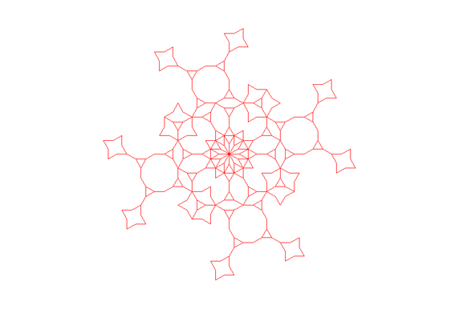

This is the base Koch Curve original_koch_curve(t, 5, 20)
My modifications:
This is my new modified Koch Curve
koch_curve(t ,5, 20)
t.rt(120)
koch_curve(t ,5, 20)

def koch_curve(t, depth, size):
if (depth == 1):
t.pencolor("red")
t.fd(size)
else:
koch_curve(t, depth-1, size)
t.lt(30)
koch_curve(t, depth-1, size)
t.rt(120)
koch_curve(t, depth-1, size)
t.lt(30)
koch_curve(t, depth-1, size)
This is the base Sierpinski Triangle original_sierpinski(t, 5, 150
My modifications:
This is my new modified Sierpinski Triangle sierpinski(t, 5, 150)
def get_color():
i = ["red", "blue", "green", "purple", "brown", "orange"]
a = random.randrange(6)
return i[a]
def square(t, size):
t.pencolor(get_color())
t.pd()
t.lt(90)
t.fd(size)
t.rt(90)
t.fd(size)
t.rt(90)
t.fd(size)
t.rt(90)
t.fd(size)
t.rt(180)
t.pu()
def sierpinski(t, depth, size):
if depth == 1:
square(t, size)
else:
sierpinski(t, depth-1, size/2)
t.fd(size)
sierpinski(t, depth-1, size/2)
t.bk(size)
t.lt(60)
t.fd(size)
t.rt(60)
sierpinski(t, depth-1, size/2)
t.rt(120)
t.fd(size)
t.lt(120)
This is the base Tree original_tree(raphael, 5, 60,15)
My modifications:
This is my new modified Tree
raphael.lt(90)
cherry_blossom_tree(raphael, 6, 200, 30, 5)
def cherry_blossom_tree(t, depth, size, angle, width):
if depth == 0:
t.pencolor("pink")
t.fillcolor("pink")
t.begin_fill()
t.circle(10)
t.end_fill()
t.pencolor("brown")
else:
t.width(width)
size += random.randrange(-6, 7)
angle += random.randrange(-2,3)
t.pencolor("brown")
t.fd(size)
t.rt(angle)
cherry_blossom_tree(t, depth-1, size * 0.65, angle, width-1)
t.lt(2 * angle)
cherry_blossom_tree(t, depth-1, size * 0.65, angle, width-1)
t.rt(angle)
t.bk(size)